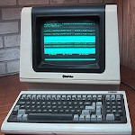
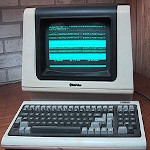
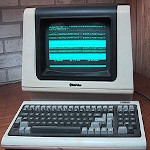

A computer is a machine that can be instructed to carry out sequences of arithmetic or logical operations automatically via computer programming. Modern computers have the ability to follow generalized sets of operations, called programs. These programs enable computers to perform an extremely wide range of tasks.
A "complete" computer including the hardware, the operating system (main software), and peripheral equipment required and used for "full" operation can be referred to as a computer system. This term may as well be used for a group of computers that are connected and work together, in particular a computer network or computer cluster.

Designed by Mohamed Anis MANI © for the Web course for 2ndTI class